/* charlie-engman - proofs */
12 plates. Deterministic overlays rendered by the composition-analysis skill.
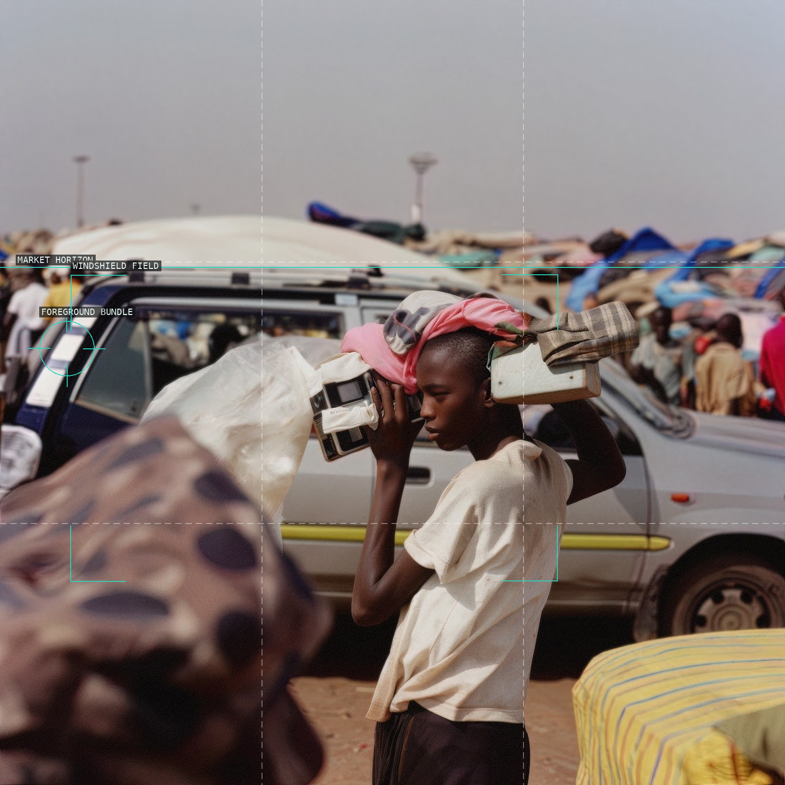
01-available-material
Transport frames overlap around a carrier in a crowded market.
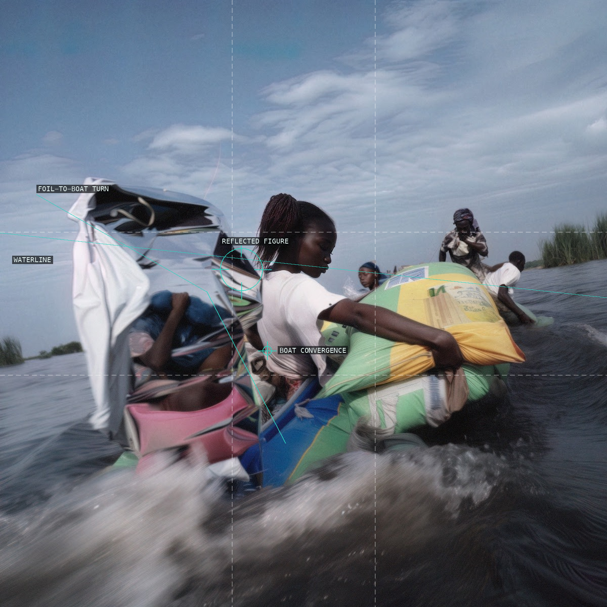
02-algorithmic-altruism
A reflective foil interrupts the boat's forward waterbound motion.
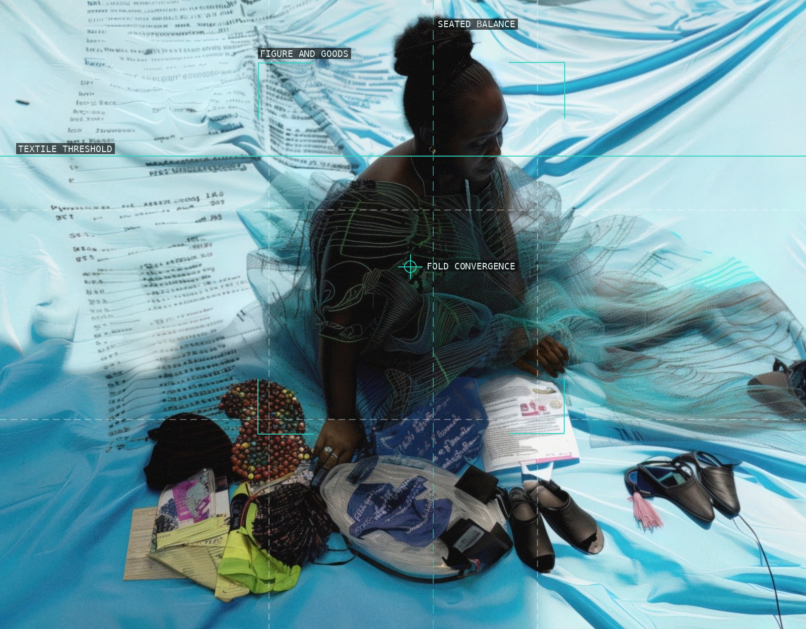
03-extended-producer-responsibility
Textile, writing, figure, and goods form one shallow distributed field.
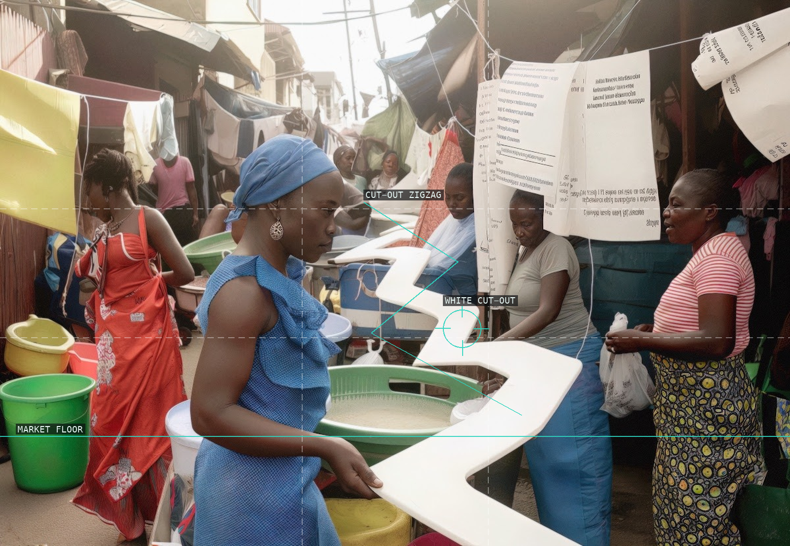
04-kantamanto-registry
A white zigzag cuts through the market's many competing figures.
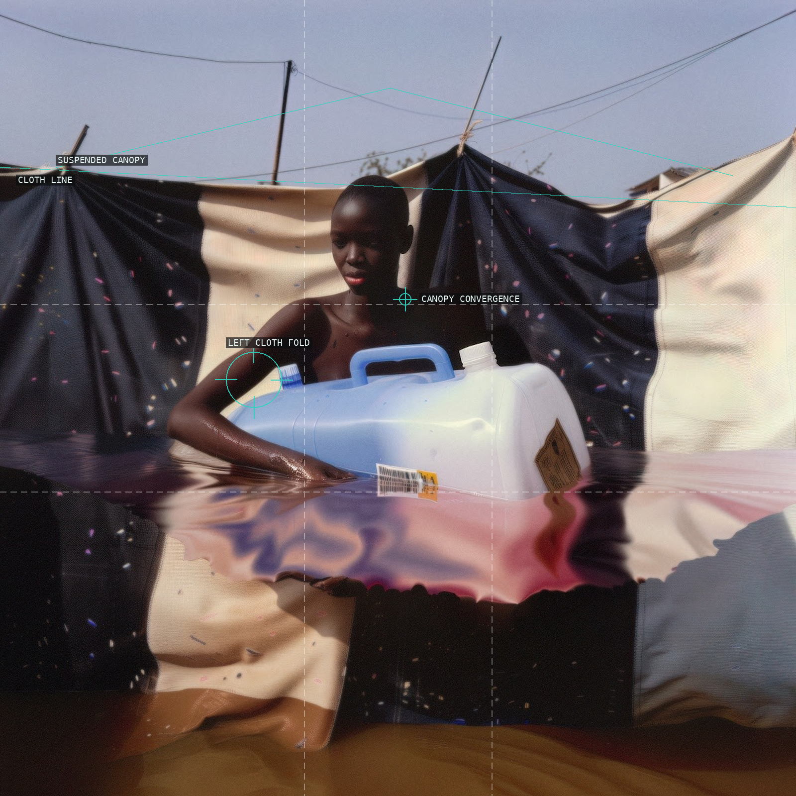
05-projection-mapping
Cloth, water reflection, and a plastic container establish a provisional enclosure.
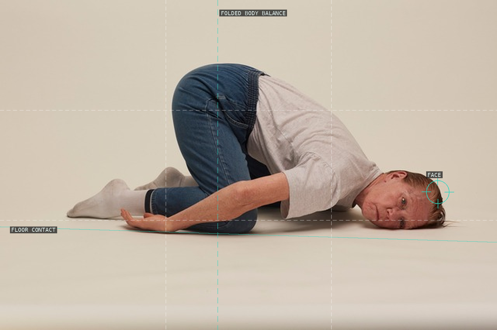
06-mom-on-the-ground-2
An almost empty studio frame intensifies the figure's curled pose and gaze.
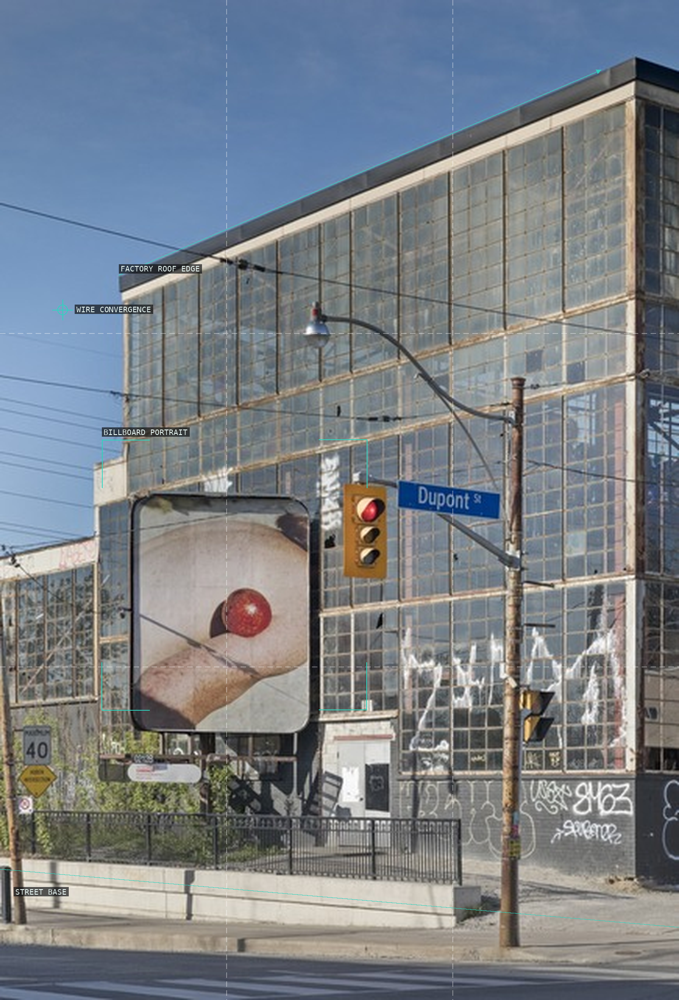
07-mom-01
A billboard fragment is inserted into a factory façade and street-wire grid.
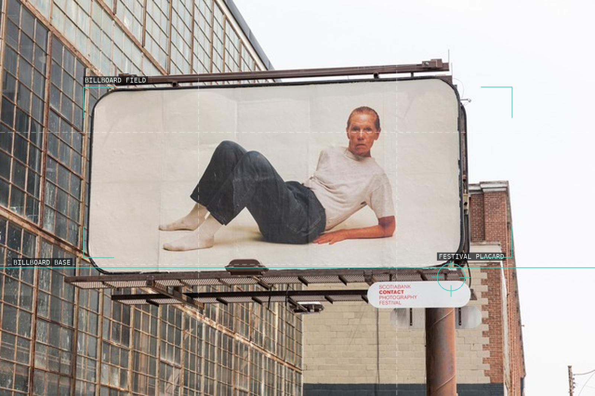
08-mom-02
A reclining billboard figure becomes an architectural inset against glass.
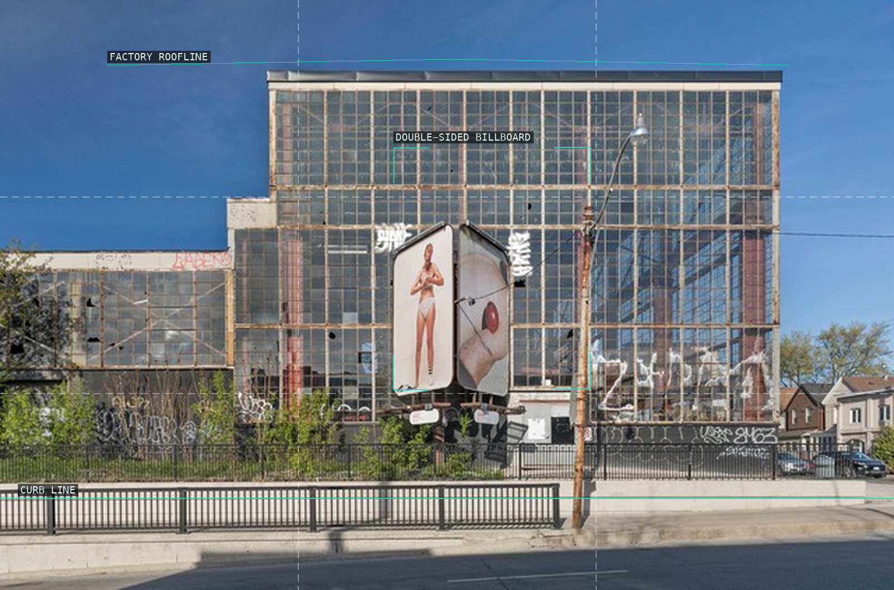
09-mom-03
A double-sided billboard forces two portraits into one façade view.
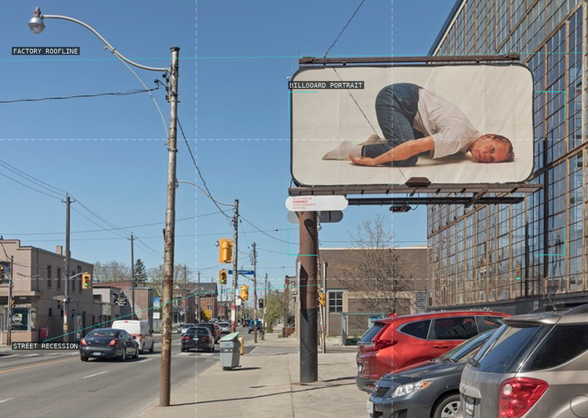
10-mom-04
A roadside recession contains the billboard's curled body in a second frame.
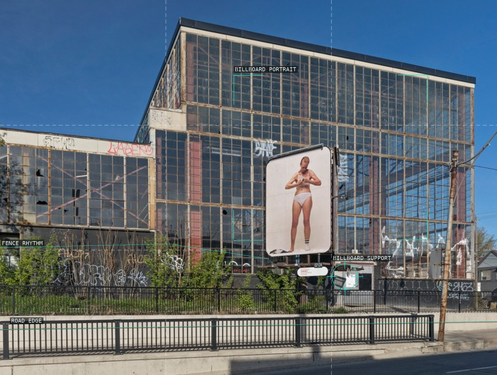
11-mom-05
A standing figure is isolated by a rounded sign edge and factory grid.
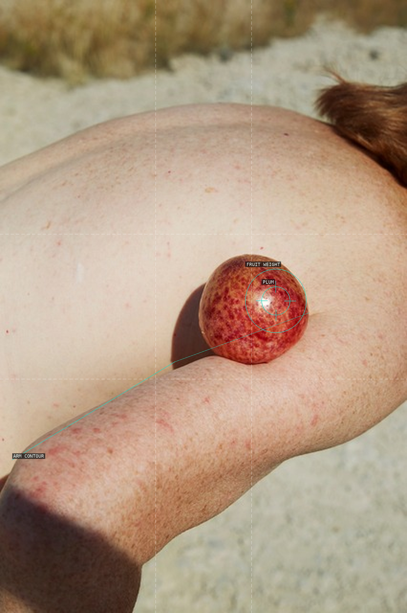
12-mom-with-plum
A small plum holds the focal weight against the body-scale arm curve.